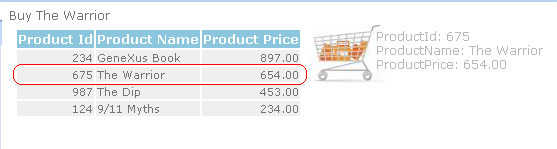

This feature lets the end user drag & drop the content associated to controls (grid content, table content, etc). This is a way to drag information from one place to another, in order to take some actions. That information is associated with a web control, which could be a grid that loads the information, an image or a text block in the rows of a freestyle grid (representing an Item or entity), etc. Very Important!!! The information can be dragged from and to different web components. So, you can have the products grid in a web component and the image cart in another, a new way of interaction between web components! Let's start with an example. Suppose that you want to make a shopping form where the user can drag the products he/she wants to buy to a cart image, in order to add them to the shopping list. This can now be easily achieved. Just configure the AllowDrag property in the "products" grid, and program the drop event of the image, where the product will be added to the list. That's all!
1. First, set the AllowDrag property of the "products" grid:
Event cart.Drop(&ProductId,&ProductName)
//Here the code to buy the product
msg('Buy ' +&ProductName)
EndEvent
3. At runtime, drag the selected grid row to the image.
 Implementation DetailsAllowDrag grid propertyEnables the grid content to be dragged. AllowDrop grid propertyEnables the grid to be filled with content that was dragged from another control. The grid has to be with _no_ base table. Drag & Drop eventsSupported controls: Image, Text block, Table, Grid and FreeStyle Grid, Web Component, Button. Drag event
Syntax: <control>.Drag((out:)parameter) Drop eventSyntax: <control>.Drop(parameters) The parameters can only be variables. This parameters will be loaded with the corresponding values of the Drag event parameters. Note:There is no difference between the navigation of any user event and the navigation of the Drop event (Drag event). The rules that apply for the former apply also for the latter. Drag & Drop between different Web objects
Remember that the information can be dragged from and to different web components. So, there has to be a way to identify the information that is able to be dragged from a control and dropped into another one. Event <control>.Drop(&P1,&P2,..,&Pn) EndEvent 2. Any other object "B" which satisfies the following: - has a grid with AllowDrag property set to "Yes", and the columns of the grid match exactly the parameters of the drop event, and has optionally, others:
&P1,&P2,..,&Pn,..(Others) Graphically: Drag(X,Y,Z,T) ------------> Drop(X,Y) Notes
Examples
Drag and Drop in Applications Sample 1
|